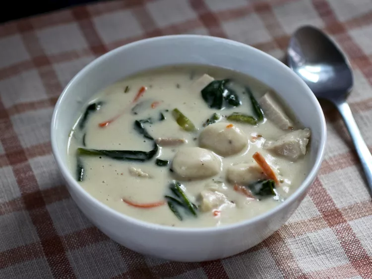

Cream of Chicken Gnocchi Soup
A copycat version of Olive Garden's creamy gnocchi soup. It's oh-so good!

How To Make Gnocchi Soup
You'll find a detailed ingredient list and step-by-step instructions in the recipe
below, but let's go over the basics:
Ingredients:
These are the simple ingredients you’ll need to make this Gnocchi recipe:
- ½ cup margarine
- ¾ cup finely chopped onion
- ¾ cup finely chopped celery
- ½ cup finely grated carrot
- 1 ½ teaspoons minced garlic
- ⅓ cup all-purpose flour
- 4 cups chicken broth
- ¾ cup half-and-half
- ¾ cup milk
- 1 (16 ounce) package potato gnocchi
- 1 ½ cups chopped cooked chicken
- ¾ cup shredded fresh spinach
- ½ teaspoon dried rosemary
- ½ teaspoon salt
- ¼ teaspoon ground black pepper
- ¼ teaspoon nutmeg
How To Make Gnocchi Soup Step-By-Step
Here's a very brief overview of what you can expect when you make homemade Gnocchi Soup:
-
Melt margarine in a large, heavy saucepan over medium heat; cook and stir onion,
celery, carrot, and garlic in hot margarine until softened, 5 to 10 minutes. Stir
flour into vegetable mixture; cook and stir until vegetables are evenly coated and
flour is fragrant, 3 to 4 minutes.
-
Pour chicken broth, half-and-half, and milk over vegetable mixture; cook and stir
until mixture thickens and comes to a boil, about 5 minutes. Reduce heat and stir in
gnocchi, chicken, and spinach; season with rosemary, salt, black pepper, and nutmeg.
Cook soup over low heat until gnocchi is tender, 8 to 10 minutes.
Recipe Tip: You can buy frozen gnocchi and cook it in a slow cooker for 2 hours,
or cook the entire soup in a slow cooker until flavors blend, 60 to 90 minutes.